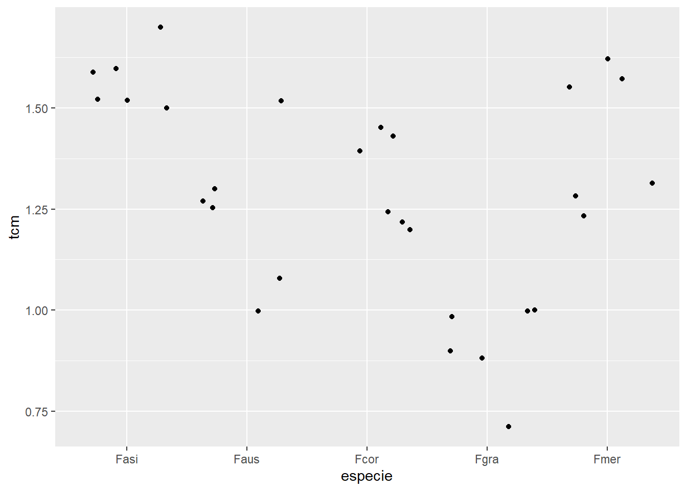
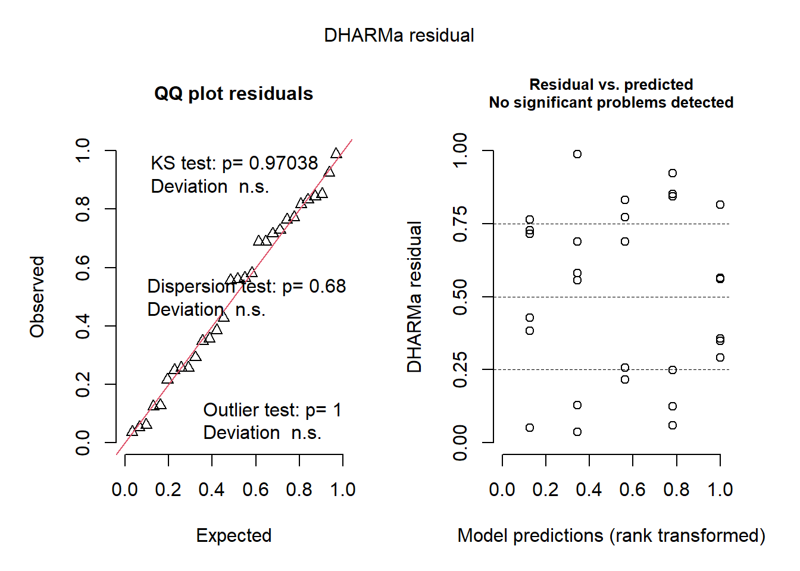
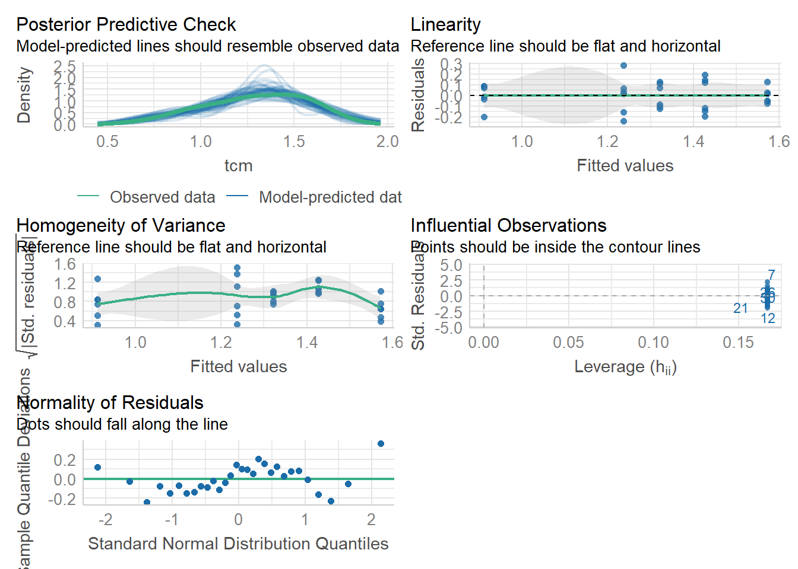
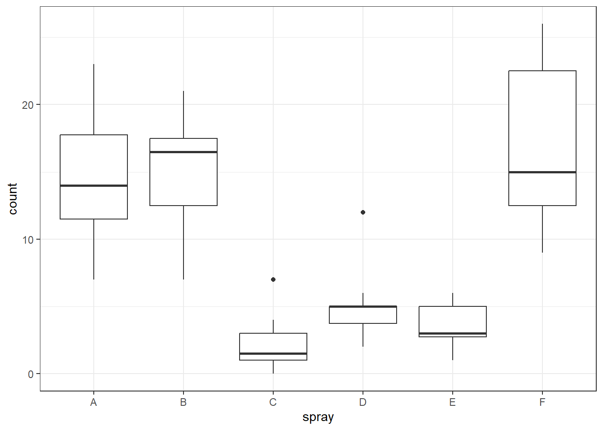
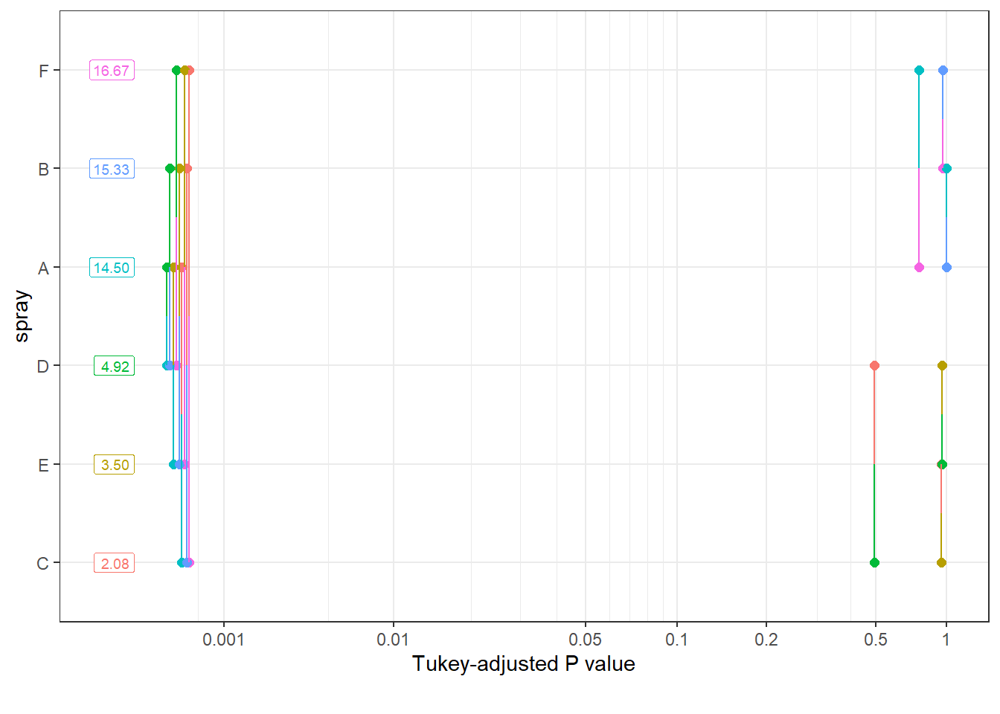

library(gsheet)
micelial <- gsheet2tbl("https://docs.google.com/spreadsheets/d/1bq2N19DcZdtax2fQW9OHSGMR0X2__Z9T/edit#gid=959387827")Anova com um fator
Três tratamentos ou mais
library(ggplot2)
micelial |>
ggplot(aes(especie, tcm))+
geom_jitter()
A função anova() permite a observação da variabilidade em cada grupo.
O bartlett.test() é um teste estatístico utilizado para verificar se múltiplas amostras independentes possuem variâncias homogêneas.
m1 <- lm(tcm ~ especie -1, data = micelial)
anova(m1)Analysis of Variance Table
Response: tcm
Df Sum Sq Mean Sq F value Pr(>F)
especie 5 51.677 10.3354 552.2 < 2.2e-16 ***
Residuals 25 0.468 0.0187
---
Signif. codes: 0 '***' 0.001 '**' 0.01 '*' 0.05 '.' 0.1 ' ' 1summary(m1)
Call:
lm(formula = tcm ~ especie - 1, data = micelial)
Residuals:
Min 1Q Median 3Q Max
-0.23667 -0.09667 0.01583 0.08833 0.28333
Coefficients:
Estimate Std. Error t value Pr(>|t|)
especieFasi 1.57167 0.05585 28.14 < 2e-16 ***
especieFaus 1.23667 0.05585 22.14 < 2e-16 ***
especieFcor 1.32167 0.05585 23.66 < 2e-16 ***
especieFgra 0.91167 0.05585 16.32 7.66e-15 ***
especieFmer 1.42667 0.05585 25.54 < 2e-16 ***
---
Signif. codes: 0 '***' 0.001 '**' 0.01 '*' 0.05 '.' 0.1 ' ' 1
Residual standard error: 0.1368 on 25 degrees of freedom
Multiple R-squared: 0.991, Adjusted R-squared: 0.9892
F-statistic: 552.2 on 5 and 25 DF, p-value: < 2.2e-16shapiro.test(m1$residuals)
Shapiro-Wilk normality test
data: m1$residuals
W = 0.9821, p-value = 0.8782bartlett.test(tcm ~especie, data = micelial)
Bartlett test of homogeneity of variances
data: tcm by especie
Bartlett's K-squared = 4.4367, df = 4, p-value = 0.3501library(emmeans)
medias1 <- emmeans(m1, ~ especie)
library(multcomp)Carregando pacotes exigidos: mvtnormCarregando pacotes exigidos: survivalCarregando pacotes exigidos: TH.dataCarregando pacotes exigidos: MASS
Attaching package: 'TH.data'The following object is masked from 'package:MASS':
geyserlibrary(multcompView)
cld(medias1) especie emmean SE df lower.CL upper.CL .group
Fgra 0.912 0.0559 25 0.797 1.03 1
Faus 1.237 0.0559 25 1.122 1.35 2
Fcor 1.322 0.0559 25 1.207 1.44 2
Fmer 1.427 0.0559 25 1.312 1.54 23
Fasi 1.572 0.0559 25 1.457 1.69 3
Confidence level used: 0.95
P value adjustment: tukey method for comparing a family of 5 estimates
significance level used: alpha = 0.05
NOTE: If two or more means share the same grouping symbol,
then we cannot show them to be different.
But we also did not show them to be the same. library(DHARMa)This is DHARMa 0.4.6. For overview type '?DHARMa'. For recent changes, type news(package = 'DHARMa')plot(simulateResiduals(m1))Unable to calculate quantile regression for quantile 0.25. Possibly to few (unique) data points / predictions. Will be ommited in plots and significance calculations.Unable to calculate quantile regression for quantile 0.5. Possibly to few (unique) data points / predictions. Will be ommited in plots and significance calculations.Unable to calculate quantile regression for quantile 0.75. Possibly to few (unique) data points / predictions. Will be ommited in plots and significance calculations.
library(performance)
check_normality(m1)OK: residuals appear as normally distributed (p = 0.878).check_heteroscedasticity(m1)OK: Error variance appears to be homoscedastic (p = 0.880).check_model(m1)
Usa-se a função count() para fazer a contagem do número de repetições (n), contagem dos insetos mortos devido a condição inseticida. Os dados apresentam apenas um fator, portanto faz-se uma anova unifatorial.
library (ggplot2)
theme_set(theme_bw())
inseticida <- InsectSprays
library(tidyverse)── Attaching core tidyverse packages ──────────────────────── tidyverse 2.0.0 ──
✔ dplyr 1.1.4 ✔ readr 2.1.5
✔ forcats 1.0.0 ✔ stringr 1.5.1
✔ lubridate 1.9.3 ✔ tibble 3.2.1
✔ purrr 1.0.2 ✔ tidyr 1.3.1
── Conflicts ────────────────────────────────────────── tidyverse_conflicts() ──
✖ dplyr::filter() masks stats::filter()
✖ dplyr::lag() masks stats::lag()
✖ dplyr::select() masks MASS::select()
ℹ Use the conflicted package (<http://conflicted.r-lib.org/>) to force all conflicts to become errorsinseticida |>
count(spray) spray n
1 A 12
2 B 12
3 C 12
4 D 12
5 E 12
6 F 12Visualização dos dados
inseticida |>
ggplot(aes(spray, count))+
geom_boxplot()
Pode-se observar pelo gráfico boxplot gerado, que o eixo y mostra a contagem do número de insetos mortos, que há variabilidade, o spray F apresenta maior variância entre o grupo e o spray E menor variância. Também, pode-se observar outliers nos grupos C e D.
m1 <- lm(count~spray,
data = inseticida)
summary(m1)
Call:
lm(formula = count ~ spray, data = inseticida)
Residuals:
Min 1Q Median 3Q Max
-8.333 -1.958 -0.500 1.667 9.333
Coefficients:
Estimate Std. Error t value Pr(>|t|)
(Intercept) 14.5000 1.1322 12.807 < 2e-16 ***
sprayB 0.8333 1.6011 0.520 0.604
sprayC -12.4167 1.6011 -7.755 7.27e-11 ***
sprayD -9.5833 1.6011 -5.985 9.82e-08 ***
sprayE -11.0000 1.6011 -6.870 2.75e-09 ***
sprayF 2.1667 1.6011 1.353 0.181
---
Signif. codes: 0 '***' 0.001 '**' 0.01 '*' 0.05 '.' 0.1 ' ' 1
Residual standard error: 3.922 on 66 degrees of freedom
Multiple R-squared: 0.7244, Adjusted R-squared: 0.7036
F-statistic: 34.7 on 5 and 66 DF, p-value: < 2.2e-16anova(m1)Analysis of Variance Table
Response: count
Df Sum Sq Mean Sq F value Pr(>F)
spray 5 2668.8 533.77 34.702 < 2.2e-16 ***
Residuals 66 1015.2 15.38
---
Signif. codes: 0 '***' 0.001 '**' 0.01 '*' 0.05 '.' 0.1 ' ' 1library(emmeans)
m1_medias <- emmeans(m1, ~ spray)
plot(m1_medias)
library(multcomp)
cld(m1_medias) spray emmean SE df lower.CL upper.CL .group
C 2.08 1.13 66 -0.177 4.34 1
E 3.50 1.13 66 1.240 5.76 1
D 4.92 1.13 66 2.656 7.18 1
A 14.50 1.13 66 12.240 16.76 2
B 15.33 1.13 66 13.073 17.59 2
F 16.67 1.13 66 14.406 18.93 2
Confidence level used: 0.95
P value adjustment: tukey method for comparing a family of 6 estimates
significance level used: alpha = 0.05
NOTE: If two or more means share the same grouping symbol,
then we cannot show them to be different.
But we also did not show them to be the same. pwpm(m1_medias) A B C D E F
A [14.50] 0.9952 <.0001 <.0001 <.0001 0.7542
B -0.833 [15.33] <.0001 <.0001 <.0001 0.9603
C 12.417 13.250 [ 2.08] 0.4921 0.9489 <.0001
D 9.583 10.417 -2.833 [ 4.92] 0.9489 <.0001
E 11.000 11.833 -1.417 1.417 [ 3.50] <.0001
F -2.167 -1.333 -14.583 -11.750 -13.167 [16.67]
Row and column labels: spray
Upper triangle: P values adjust = "tukey"
Diagonal: [Estimates] (emmean)
Lower triangle: Comparisons (estimate) earlier vs. laterpwpp(m1_medias)
pairs(m1_medias) contrast estimate SE df t.ratio p.value
A - B -0.833 1.6 66 -0.520 0.9952
A - C 12.417 1.6 66 7.755 <.0001
A - D 9.583 1.6 66 5.985 <.0001
A - E 11.000 1.6 66 6.870 <.0001
A - F -2.167 1.6 66 -1.353 0.7542
B - C 13.250 1.6 66 8.276 <.0001
B - D 10.417 1.6 66 6.506 <.0001
B - E 11.833 1.6 66 7.391 <.0001
B - F -1.333 1.6 66 -0.833 0.9603
C - D -2.833 1.6 66 -1.770 0.4921
C - E -1.417 1.6 66 -0.885 0.9489
C - F -14.583 1.6 66 -9.108 <.0001
D - E 1.417 1.6 66 0.885 0.9489
D - F -11.750 1.6 66 -7.339 <.0001
E - F -13.167 1.6 66 -8.223 <.0001
P value adjustment: tukey method for comparing a family of 6 estimates m1$residuals 1 2 3 4 5 6
-4.50000000 -7.50000000 5.50000000 -0.50000000 -0.50000000 -2.50000000
7 8 9 10 11 12
-4.50000000 8.50000000 2.50000000 5.50000000 -0.50000000 -1.50000000
13 14 15 16 17 18
-4.33333333 1.66666667 5.66666667 -4.33333333 0.66666667 -1.33333333
19 20 21 22 23 24
1.66666667 1.66666667 3.66666667 5.66666667 -8.33333333 -2.33333333
25 26 27 28 29 30
-2.08333333 -1.08333333 4.91666667 -0.08333333 0.91666667 -1.08333333
31 32 33 34 35 36
-0.08333333 -1.08333333 0.91666667 -2.08333333 -1.08333333 1.91666667
37 38 39 40 41 42
-1.91666667 0.08333333 7.08333333 1.08333333 -0.91666667 -1.91666667
43 44 45 46 47 48
0.08333333 0.08333333 0.08333333 0.08333333 -2.91666667 -0.91666667
49 50 51 52 53 54
-0.50000000 1.50000000 -0.50000000 1.50000000 -0.50000000 2.50000000
55 56 57 58 59 60
-2.50000000 -2.50000000 -0.50000000 -1.50000000 2.50000000 0.50000000
61 62 63 64 65 66
-5.66666667 -7.66666667 -1.66666667 5.33333333 -1.66666667 -0.66666667
67 68 69 70 71 72
-3.66666667 -6.66666667 9.33333333 9.33333333 7.33333333 -3.66666667 hist(m1$residuals)
qqnorm(m1$residuals)
qqline(m1$residuals)
shapiro.test(m1$residuals)
Shapiro-Wilk normality test
data: m1$residuals
W = 0.96006, p-value = 0.02226bartlett.test(count ~spray,
data = inseticida)
Bartlett test of homogeneity of variances
data: count by spray
Bartlett's K-squared = 25.96, df = 5, p-value = 9.085e-05library(performance)
check_normality(m1)Warning: Non-normality of residuals detected (p = 0.022).check_heteroscedasticity(m1)Warning: Heteroscedasticity (non-constant error variance) detected (p < .001).library(DHARMa)
plot(simulateResiduals(m1))
A função lm() que significa linear model, é usado para modelar dados em uma relação linear entre a variavel dependente (resposta) e independente (tratamento).
“~” significa em função de.
A função summary ajuda na visualização dos dados. Observar previamente o erro-padrão, graus de liberdade, estatistica de T, e valor P. A comparação foi em relação ao tratamento A.
A função anova() apresenta o valor de F que é o teste de análise de variância, vai determinar a variabilidade entre os grupos (se o valor calculado for maior que o tabelado, rejeita-se a hipótese nula de que as médias são iguais(P<0,05)).
A função emmeans() pode ser utilizada para vizualizar as médias e comparar este valor em cada tratamento. Dentro do pacote multicomp, há a função cld que permite visualizar os tratamentos agrupados de acordo com um teste estatistico (Tukey) no exemplo há 2 grupos formados (C, E e D) e (A, B e F), portanto há diferença entre os tratamentos, como pode-se observar na Anova.
A função pwpm() mostra a comparação entre as médias dos tratamentos pelo teste de tukey. Triângulo superior mostra o p-valor. A diagonal mostra a média e o triângulo inferior mostra a diferença dos tratamentos em relação a média. A função pairs() também pode ser usada para a visualização dos valores de T e p- valor.
A função pwpp() mostra a visualização do teste de Tukey em relação aos tratamentos.
O valor dos resíduos (erro) pode ser visualizado utilizando $ (seleciona uma coluna no conjunto de dados). No exemplo, m1 é o conjunto e residuals é o que se deseja selecionar. Pode-se utilizar a função hist() para visualização a distribuiçõao dos residuos e ver se a mesma se aproxima da distribuição normal.
As funções qqnorm(m1$residuals) e qqline() juntas mostram um gráfico com os valores da distribuição dos resíduos em circulos e a reta dos residuos esperados. Essas funções plotam os resíduos simulados do modelo, o que pode ser útil para avaliar a adequação do modelo aos dados.
A função shapiro.test mostra se a distribuição dos dados é normal (Se o valor estiver abaixo de 0,05 a distribuição não é considerada normal). A função check_normality() também pode ser usada para ver a normalidade dos dados.
A função bartlett.test() mostra se as variâncias são ou não homogêneas (valor abaixo de 0,05 não é considerado homogênea). A função check_heteroscedasticity() também mostra a homogeneidade das variâncias.
Como a distribuição do conjunto dos dados não foram normais e as variâncias não foram homogêneas, pode se utilizar alternativas para corrigir a distribuição e homogeneidade dos dados -> Transformação.